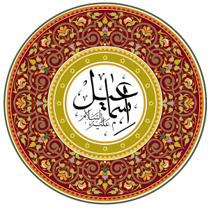

HAZRETİ İSHÂK'IN DOĞUMU
Allah (azze ve celle) verdiği sözü tamamına erdirdi: Sare (r.a.) anamız hamile kaldı, Hz. İbrahim'e (a.s.) söylenen vakitte, ona bir oğul verdi. İbrahim peygamber, oğluna İshâk ismini verdi ve onu Allah'ın emri uyarınca 8'inci gününde kestirdi.a O sırada Hz. İbrahim 100b yaşındaydı. Sare (r.a.) anamız: “Allah benim yüzümü güldürdü. Artık bunu işiten herkes de benimle birlikte gülecektir!”c dedi. Benim de bir gün çocuk emzireceğimi kim düşünürdü ki? Efendimin bile yaşlı olduğu şu zamanda, ona bir oğul verdim!”

İsmail (a.s.) Kıssası
وَاذْكُرْ فِي الْكِتَابِ إِسْمَاعِيلَ ۚ إِنَّهُ كَانَ صَادِقَ الْوَعْدِ وَكَانَ رَسُولًا نَبِيًّا
«Ve Kitap'ta İsmail'i de zikret. Çünkü o, vaadinde sadıktı ve gönderilmiş (Resul) bir peygamberdi.» (Meryem sûresi, 19/54)
Sare anamız, Hacer anamızı (radıyallahu anhümâ) kıskanırdı. Bunun hakkında birçok alimin beyanı vardır.d Taberî, Hz. Sare anamızın bir değil, iki kere Hacer (r.a.) anamızı evden kovduğunu yazar. e
Bir gün Hz. İbrahim (a.s.) oğlu İshâk'ın sütten kesilmesi sebebiyle büyük bir ziyafet verdi. Sare anamız, Hacer anamızın oğlu İsmail'in ziyafette oturduğunu ve güldüğünü görünce, Hz. İbrahim'e geldi ve: “Hacer'i, oğluyla birlikte evden kov! Cariyemin oğlu, benim oğlum İshâk'ın mirasına ortak olmasın” diye talepte bulundu. Bu laflar Allah Resûlünü çok üzdü. Sonuçta Hz. İsmail de onun oğluydu! Fakat Allah (c.c.), ona vahyetti ve: «Sare'nin dediklerini yap. Çünkü zürriyetin için verdiğim vaadim İshâk aracılığıyla devam edecektir. İsmail ve Hacer içinse telaşlanma. Ben onları koruyacağım. İsmail'in neslinden çok büyük bir halk yaratacağım. Çünkü o da senin çocuğundur.» dedi.
Evet, bu da Allah'tan gelen bir sınavdı.f Evlattan ayrılmak kolay mı? Ne de olsa İsmail aleyhisselam, Hz. İbrahim peygamberin ilk oğluydu.
HZ. İBRAHİM'İN (a.s.) DUASI
Kur'ân-ı Kerîm'de, Allah'ın Resûlünün duası yazmaktadır:
رَبَّنَا إِنِّي أَسْكَنْتُ مِنْ ذُرِّيَّتِي بِوَادٍ غَيْرِ ذِي زَرْعٍ عِنْدَ بَيْتِكَ الْمُحَرَّمِ رَبَّنَا لِيُقِيمُوا الصَّلَاةَ فَاجْعَلْ أَفْئِدَةً مِنَ النَّاسِ تَهْوِي إِلَيْهِمْ وَارْزُقْهُمْ مِنَ الثَّمَرَاتِ لَعَلَّهُمْ يَشْكُرُونَ
«Rabbimiz, gerçekten ben, çocuklarımdan bir kısmını Senin kutsal evinin yanında ekin bitmeyen bir vadiye yerleştirdim; Rabbimiz, namazı kılsınlar diye (öyle yaptım). Artık sen de birtakım insanları onlara meylettir, onları ürünlerden rızıklandır, umulur ki şükrederler.»g
Hz. Hacer ile Hz. İsmail yeni yerlerine hicret ettikten sonra, onları Cenab-ı Hak bizzat kendisi koruyup kolladı. Çölde ortaya çıkan su da Allah'ın merhametine bir delildir.
ÇÖLDE SUYUN ÇIKIŞI
Peygamberimiz'in (s.a.v.) hadislerinde yazıldığı üzere, Hacer (r.a.) anamız, Hz. İsmail'i (a.s.) bir çalının gölgesine yatırıp, kırbasınıh bir dala astı. O da oğlu da kırbadan su içiyorlardı. Bir süre sonra su tamamen bitti.i Su tükenince Hz. Hacer (r.a.): “Oğlumun ölümünü görmeyim” dedij ve biraz uzağa gidip oturdu.
Sonra bir tepeliğe çıkıp su aramak için etrafına bakındı. Birinin sesini duyma ümidiyle etrafı dinledi, ama nâfile; ne gelen vardı, ne giden. Sonra aşağı indi ve diğer tepeye koştu. Elini gözüne siper edip uzaklara baktı. Yine kimseleri göremedi. Bundan sonra ağlayarak iki tepek arasında gidip geldi.
Sonra Allah'ın meleği zuhur edip: “Yâ Hacer, neden ağlıyorsun? Korkma, iniltin arş-ı a'lâya erişti. Kalk, çocuğunu da kaldır! Allah onun neslinden büyük bir halk yaratacaktır” dedi. Allah (azze ve celle) onlar için bir çeşme açmıştı, lakin Hacer (r.a.) anamızın onu görecek hali yoktu. Bir süre sonra Allah onun nazarını çeşmeye yöneltti. İşte! Su oradaydı. Hayat bahşeden su! Kırbasını doldurup içti, sonra oğlu Hz. İsmail'e (a.s.) de içirdi. Su kesilmeyip,l yerden kaynayıp çıkmaya devam ediyordu. Nihayetinde Allah-u Teâlâ her zaman onların yar ve yardımcısıydı. İsmail aleyhisselam çölde büyüyüp mahir bir avcı oldu. Annesi onu Mısırlı bir kızla evlendirdi.